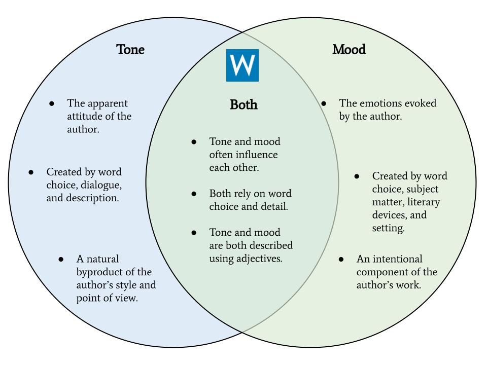

In literary analysis, tone is an author's attitude toward their subject matter. The author's
tone in a literary work can reflect their personal opinion, or the tone can channel the
feelings of a particular character. Authors convey tone through their word choice,
punctuation, and sentence structure.
While tone signifies an author's point of view, the mood of a piece of writing is the
atmosphere of a piece and the overall feeling it conveys to the reader.
While Charles Dickens’s tone may be ironic, cynical, and clever in novels like Bleak House and Hard
Times, but the mood he creates for his readers is dreary and intriguing. Authors convey
mood through figurative language and literary devices, letting the reader feel whatever
mood the writing evokes.
|  |